Het spel waar je als kind van hield
Zonder dat oma vals speelt
Analyseer, bedenk een strategie, versla het spel en word Grootmeester.
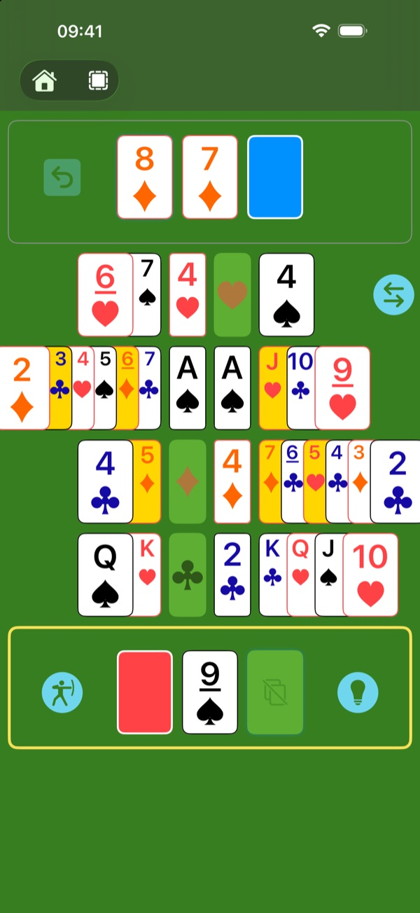
De Crapette die je kent. Gesmeed in het vuur van de competitie.
Je kent Crapette, in het Engels Russian Bank: wie als eerste alle kaarten kwijt is, wint. Hier speel je het onveranderd, op het niveau Klassiek.
Om je waarneming en je denkvermogen te scherpen, voegen de volgende niveaus stap voor stap strengere regels toe. Bij elke zet vormen die regels samen een puzzel: los hem op en je ontloopt een Stop! Los ze allemaal op en je gaat voor de beste scores.
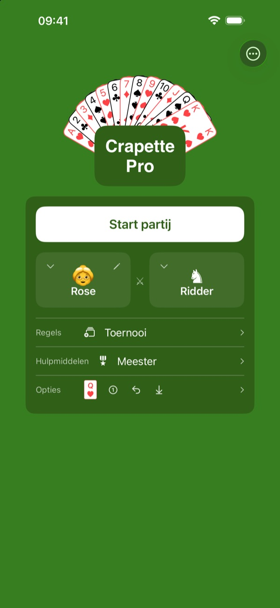
Stel je ideale partij samen.
Zes tegenstanders: iemand tegenover je, op hetzelfde apparaat, met de arbitrage naar keuze. Of de computer, van de Schildknaap, die zich vaak vergist, tot het Algoritme, dat zich nooit vergist.
Zes regelniveaus, van het officiële spel tot Ultiem✦.
Drie hulpniveaus: hoe minder hulp je neemt, hoe kostbaarder je sterren, en hoe moeilijker ze te verdienen zijn.
Dat zijn 6 × 6 × 3 = 108 manieren om te spelen.
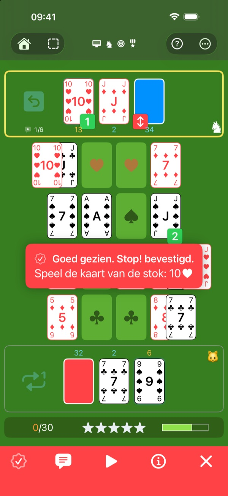
Een computer die fouten maakt, met opzet.
De Schildknaap, de Ridder en de Koning maken fouten, vaak, soms of zelden. Aan jou om ze te zien en Stop! te roepen, net als tegen een echte speler. En wil je even op adem komen? Het Algoritme vergist zich nooit: kijk gewoon hoe het speelt.
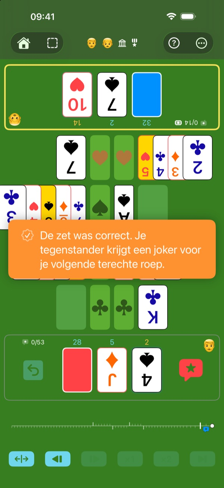
Oog in oog, zonder ruzie.
Twee spelers, één apparaat tussen jullie in, het speelveld naar ieder van jullie toe gedraaid. Zie je een fout van de ander? Roep Stop!: de computer controleert het, zonder discussie. Of laat de computer zelf scheidsrechter zijn, als je dat liever hebt. Maar let op: een valse roep levert je tegenstander een joker op.
Kleinkinderen met scherpe ogen, doorgewinterde grootouders: iedereen op gelijke voet.
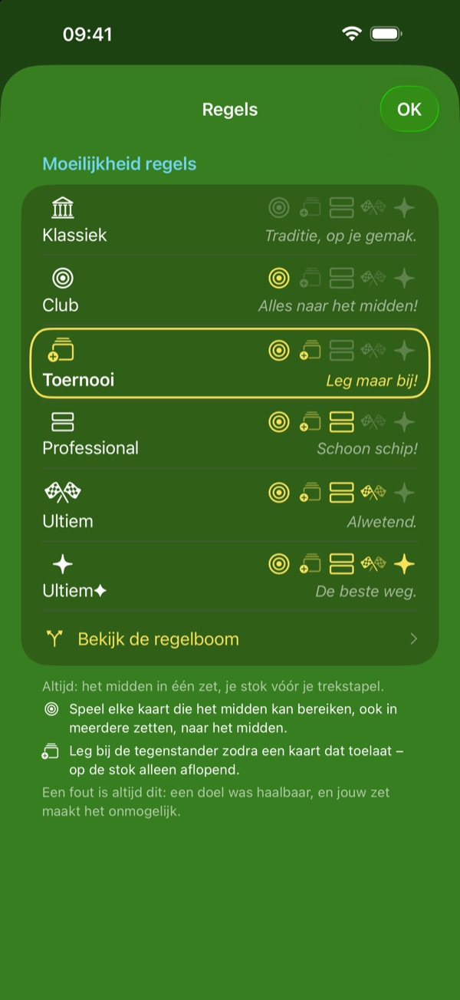
Elke zet is een puzzel.
Op het niveau Klassiek mag bijna elke zet. Elk niveau voegt een regel toe die het aantal toegestane zetten beperkt, tot alleen de beste weg overblijft. Elke zet wordt een puzzel: aan jou om de oplossing te vinden.
- Klassiek — de traditionele Crapette, met de twee officiële regels – het midden in één zet, de stok vóór de trekstapel.
- Club — breng elke kaart naar het midden die er kan komen.
- Toernooi — leg bij op de stok van je tegenstander.
- Professional — maak zoveel mogelijk rijen vrij.
- Ultiem — bereik het doel met de hoogste prioriteit in zo weinig mogelijk zetten.
- Ultiem✦ — kies tussen twee even korte wegen de weg die ook de regels met lagere prioriteit volgt.
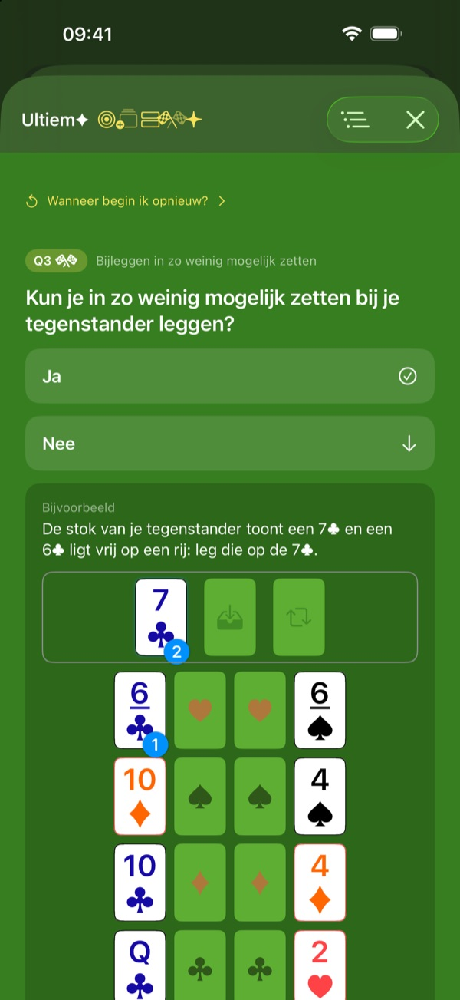
Elke zet legt zichzelf uit.
Elke Stop! die je krijgt en elke hint die je vraagt, laat je de zet zien die je moet spelen, en de regel die hem verplicht maakt.
De regelboom laat zien hoe de regels in elkaar grijpen: één vraag tegelijk, in de volgorde van je niveau, tot aan de juiste zet.
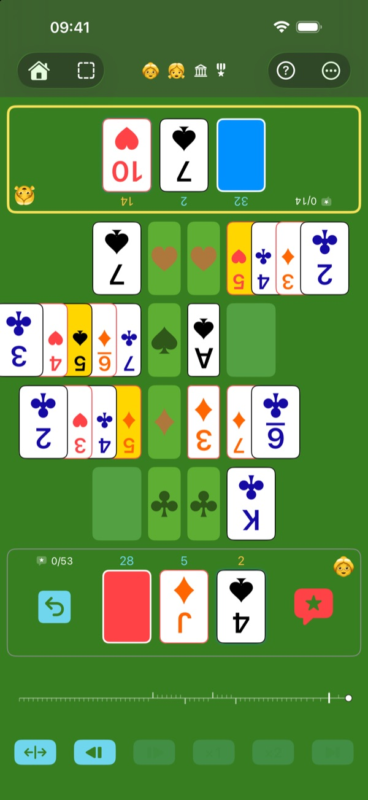
Gezonde training voor je hersenen, op elke leeftijd.
Kijken, nadenken, de beste zet zoeken tussen de mogelijke zetten: elke partij houdt je geest in vorm. Er is geen timer, dus je neemt de tijd om na te denken, en de moeilijkheid past zich aan jou aan. En dat allemaal al spelend: je traint zonder het te merken.
Het spel dat een ouder een kind kan geven: nadenken, geen flitsende effecten, geen verslaving. Een partij vraagt echte inspanning: na een of twee rennen de kinderen naar buiten om te spelen.
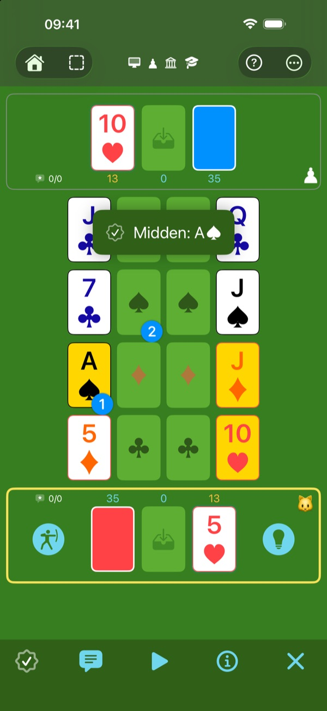
Het oefenterrein. Hier draait alles om leren.
Begin op het niveau Klassiek, als Leerling, met alle hulpmiddelen. Doelkaarten tonen de mogelijke doelen. De hint toont het doel met de hoogste prioriteit en de eerste zet om het te bereiken. Beste zet speelt voor je. Twijfel je over een knop? Tik op “?”: elk element van het speelveld legt zichzelf uit. Scherp je tactisch gevoel aan op het oefenterrein.
Zoals een houten oefenzwaard laat Oeps! je klappen opvangen zonder al te veel pijn: je speelt je zet opnieuw, maar de fout telt wel mee.
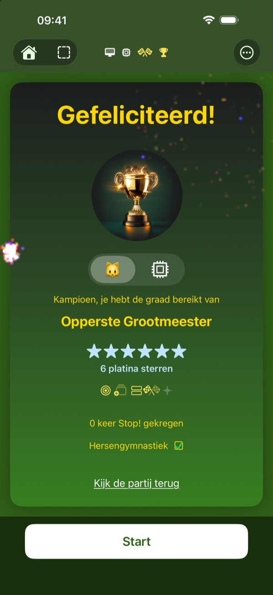
Je vooruitgang, in graden en sterren.
De score is er om je te motiveren en je vooruitgang te meten. Verdien steeds prestigieuzere graden en kostbare sterren.
De ultieme beloning: platina, voor een foutloze partij.
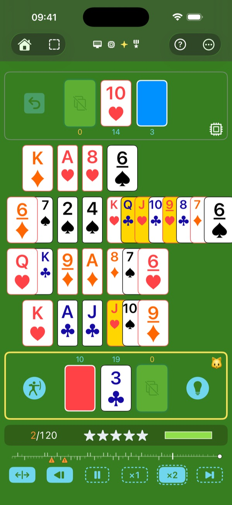
Een arena onder de schijnwerpers, zodat je geen detail mist.
Een spel dat is ontworpen om leesbaar te zijn: zelfs oma heeft geen excuus meer.
Kies je kaarten: standaard, extra duidelijk, of extra duidelijk op alle vier de hoeken. Vier kleuren, elk met een duidelijk eigen tint en vorm: alles blijft leesbaar, zelfs op een klein scherm.
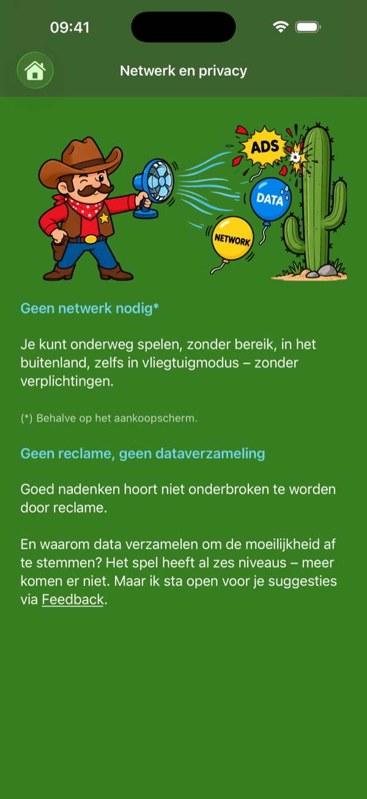
Een spel gebouwd als een atleet.
- Snel — in een mum van tijd weet de engine of je zet de juiste is.
- Licht — ongeveer 13 MB, in een oogwenk gedownload.
- Zelfstandig — je hebt geen netwerk nodig om te spelen (behalve bij een aankoop, natuurlijk).
- Discreet — het spel verzamelt geen gegevens.
- Geen reclame — goed nadenken hoort niet onderbroken te worden.
- Geen verslaving — geen meldingen, geen reeks om vol te houden, geen verplichting om te spelen. Je komt terug wanneer je er zin in hebt.
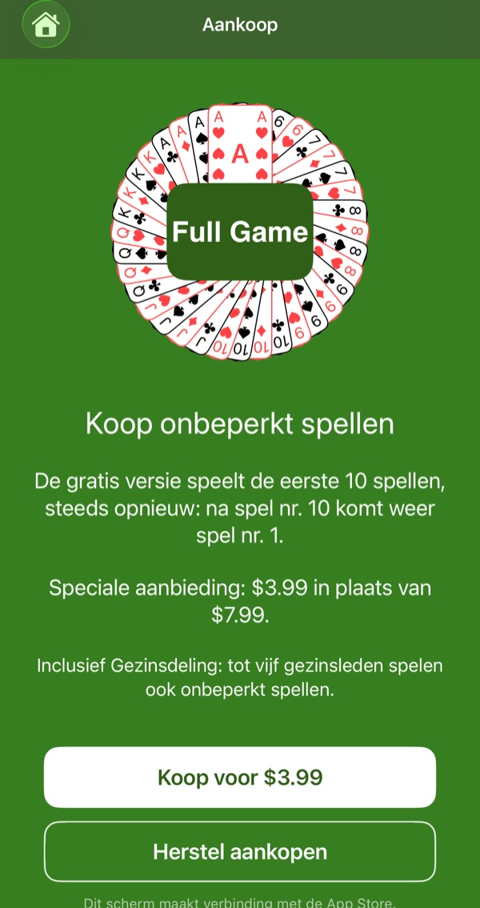
De onbeperkte zandbak.
Geen abonnement. Je kunt het hele spel gratis uitproberen, zonder tijdslimiet: alle niveaus, alle tegenstanders, alle hulpmiddelen. Bouw zoveel zandkastelen als je wilt, maar dan op de eerste tien spellen, die steeds terugkomen.
Eén aankoop opent nieuwe spellen, eindeloos.